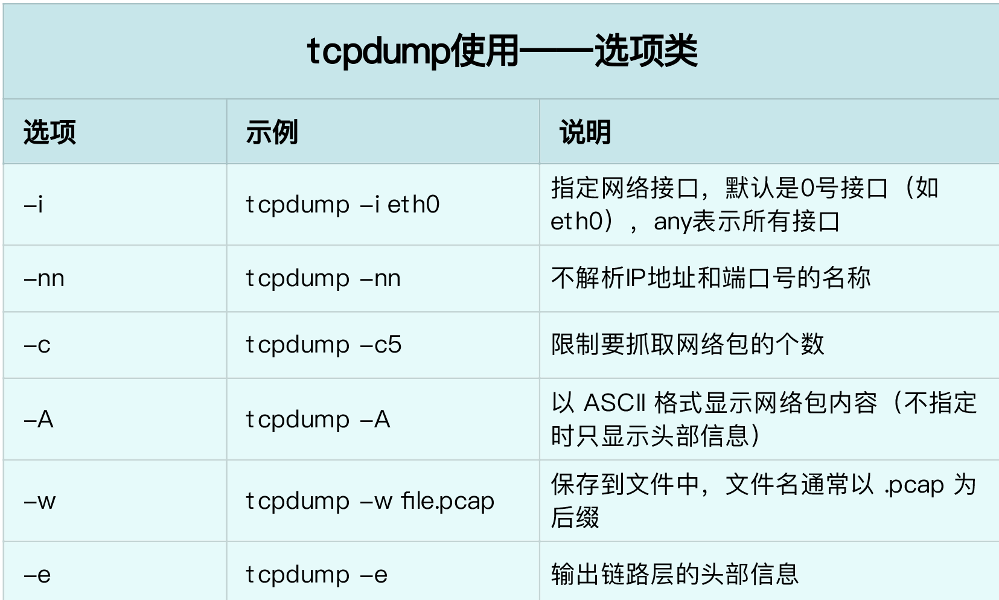
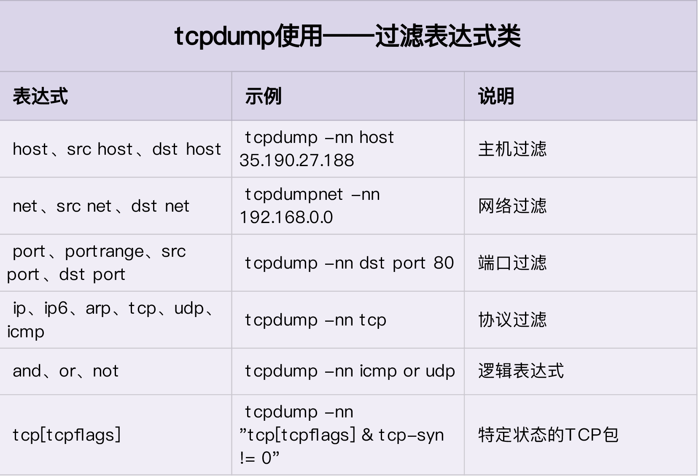

TcpDump 使用方法¶
tcpdump 常用参数¶
[root@k8s-master01 ~]# tcpdump --help
tcpdump version 4.9.2
libpcap version 1.5.3
OpenSSL 1.0.2k-fips 26 Jan 2017
Usage: tcpdump [-aAbdDefhHIJKlLnNOpqStuUvxX#] [ -B size ] [ -c count ]
[ -C file_size ] [ -E algo:secret ] [ -F file ] [ -G seconds ]
[ -i interface ] [ -j tstamptype ] [ -M secret ] [ --number ]
[ -Q|-P in|out|inout ]
[ -r file ] [ -s snaplen ] [ --time-stamp-precision precision ]
[ --immediate-mode ] [ -T type ] [ --version ] [ -V file ]
[ -w file ] [ -W filecount ] [ -y datalinktype ] [ -z postrotate-command ]
[ -Z user ] [ expression ]
-i ens192 #指定网络接口设备
-t #对抓取所有包不加时间戳 （-tt、-ttt、-tttt 加上不同的时间戳，如秒、年/月/日/时/分/秒）
-s0 #抓取的数据报不会被截断，便于后续进行分析
-n #抓取的包以IP地址方式显示，不进行主机名解析 （-nn 抓取的包如ssh，已22 的形式进行显示）
-v #输出较详细的数据 （-vv、-vvv 同理）
-w #将数据重定向到文件中，而非标准输出
tcpdump 表达式¶
!
and
or
示例：（and）
[root@k8s-master01 ~]# tcpdump tcp -nn -i ens192 -t -s0 and dst 10.6.203.63 and dst port 22
tcpdump: verbose output suppressed, use -v or -vv for full protocol decode
listening on ens192, link-type EN10MB (Ethernet), capture size 262144 bytes
IP 10.6.203.60.54956 > 10.6.203.63.22: Flags [S], seq 3113679214, win 29200, options [mss 1460,sackOK,TS val 3908715180 ecr 0,nop,wscale 7], length 0
IP 10.6.203.60.54956 > 10.6.203.63.22: Flags [.], ack 3504717432, win 229, options [nop,nop,TS val 3908715195 ecr 2496275413], length 0
IP 10.6.203.60.54956 > 10.6.203.63.22: Flags [.], ack 22, win 229, options [nop,nop,TS val 3908717316 ecr 2496277534], length 0
IP 10.6.203.60.54956 > 10.6.203.63.22: Flags [P.], seq 0:10, ack 22, win 229, options [nop,nop,TS val 3908721874 ecr 2496277534], length 10
IP 10.6.203.60.54956 > 10.6.203.63.22: Flags [.], ack 41, win 229, options [nop,nop,TS val 3908721875 ecr 2496282093], length 0
IP 10.6.203.60.54956 > 10.6.203.63.22: Flags [F.], seq 10, ack 42, win 229, options [nop,nop,TS val 3908721879 ecr 2496282096], length 0
示例：（or）当有多个dst地址时，可以使用or来进行同时抓取
[root@k8s-master01 ~]# tcpdump tcp -nn -i ens192 -s0 and dst 10.6.203.63 or dst 10.6.203.64 and dst port 22
tcpdump: verbose output suppressed, use -v or -vv for full protocol decode
listening on ens192, link-type EN10MB (Ethernet), capture size 262144 bytes
12:13:28.961250 IP 10.6.203.60.33874 > 10.6.203.64.22: Flags [S], seq 1321753332, win 29200, options [mss 1460,sackOK,TS val 3908829347 ecr 0,nop,wscale 7], length 0
12:13:28.961857 IP 10.6.203.60.33874 > 10.6.203.64.22: Flags [.], ack 1921664081, win 229, options [nop,nop,TS val 3908829348 ecr 4223571043], length 0
12:13:28.988597 IP 10.6.203.60.33874 > 10.6.203.64.22: Flags [.], ack 22, win 229, options [nop,nop,TS val 3908829375 ecr 4223571069], length 0
12:13:30.143741 IP 10.6.203.60.33874 > 10.6.203.64.22: Flags [P.], seq 0:11, ack 22, win 229, options [nop,nop,TS val 3908830530 ecr 4223571069], length 11
12:13:30.144396 IP 10.6.203.60.33874 > 10.6.203.64.22: Flags [.], ack 41, win 229, options [nop,nop,TS val 3908830531 ecr 4223572225], length 0
12:13:30.146677 IP 10.6.203.60.33874 > 10.6.203.64.22: Flags [F.], seq 11, ack 42, win 229, options [nop,nop,TS val 3908830533 ecr 4223572227], length 0
12:13:31.676547 IP 10.6.203.60.55726 > 10.6.203.63.22: Flags [S], seq 2733737364, win 29200, options [mss 1460,sackOK,TS val 3908832063 ecr 0,nop,wscale 7], length 0
12:13:31.677639 IP 10.6.203.60.55726 > 10.6.203.63.22: Flags [.], ack 963419704, win 229, options [nop,nop,TS val 3908832064 ecr 2496392281], length 0
12:13:31.712209 IP 10.6.203.60.55726 > 10.6.203.63.22: Flags [.], ack 22, win 229, options [nop,nop,TS val 3908832098 ecr 2496392316], length 0
12:13:33.055319 IP 10.6.203.60.55726 > 10.6.203.63.22: Flags [P.], seq 0:8, ack 22, win 229, options [nop,nop,TS val 3908833441 ecr 2496392316], length 8
12:13:33.056220 IP 10.6.203.60.55726 > 10.6.203.63.22: Flags [.], ack 41, win 229, options [nop,nop,TS val 3908833442 ecr 2496393660], length 0
12:13:33.056626 IP 10.6.203.60.55726 > 10.6.203.63.22: Flags [F.], seq 8, ack 42, win 229, options [nop,nop,TS val 3908833443 ecr 2496393660], length 0
示例：(!) 排除src/dst地址为10.6.203.64/10.6.203.63 为22的数据包
[root@k8s-master01 ~]# tcpdump tcp -nn -i ens192 -t -s0 and ! dst 10.6.203.63 and ! src 192.168.170.20 and dst port 22
tcpdump: verbose output suppressed, use -v or -vv for full protocol decode
listening on ens192, link-type EN10MB (Ethernet), capture size 262144 bytes
IP 10.6.203.60.50800 > 10.6.203.64.22: Flags [S], seq 2539166541, win 29200, options [mss 1460,sackOK,TS val 3915719486 ecr 0,nop,wscale 7], length 0
IP 10.6.203.60.50800 > 10.6.203.64.22: Flags [.], ack 253672407, win 229, options [nop,nop,TS val 3915719487 ecr 4230461180], length 0
IP 10.6.203.60.50800 > 10.6.203.64.22: Flags [.], ack 22, win 229, options [nop,nop,TS val 3915719518 ecr 4230461211], length 0
IP 10.6.203.60.50800 > 10.6.203.64.22: Flags [P.], seq 0:5, ack 22, win 229, options [nop,nop,TS val 3915731003 ecr 4230461211], length 5
IP 10.6.203.60.50800 > 10.6.203.64.22: Flags [P.], seq 5:10, ack 22, win 229, options [nop,nop,TS val 3915731850 ecr 4230472697], length 5
IP 10.6.203.60.50800 > 10.6.203.64.22: Flags [.], ack 41, win 229, options [nop,nop,TS val 3915731850 ecr 4230473544], length 0
IP 10.6.203.60.50800 > 10.6.203.64.22: Flags [F.], seq 10, ack 42, win 229, options [nop,nop,TS val 3915731851 ecr 4230473544], length 0
IP 10.6.203.60.38270 > 10.6.203.62.22: Flags [S], seq 631664675, win 29200, options [mss 1460,sackOK,TS val 3915742485 ecr 0,nop,wscale 7], length 0
IP 10.6.203.60.38270 > 10.6.203.62.22: Flags [.], ack 3229258316, win 229, options [nop,nop,TS val 3915742498 ecr 1630199670], length 0
IP 10.6.203.60.38270 > 10.6.203.62.22: Flags [.], ack 22, win 229, options [nop,nop,TS val 3915743861 ecr 1630201039], length 0
IP 10.6.203.60.38270 > 10.6.203.62.22: Flags [P.], seq 0:5, ack 22, win 229, options [nop,nop,TS val 3915748354 ecr 1630201039], length 5
IP 10.6.203.60.38270 > 10.6.203.62.22: Flags [P.], seq 5:7, ack 22, win 229, options [nop,nop,TS val 3915748478 ecr 1630205533], length 2
IP 10.6.203.60.38270 > 10.6.203.62.22: Flags [.], ack 41, win 229, options [nop,nop,TS val 3915748480 ecr 1630205658], length 0
IP 10.6.203.60.38270 > 10.6.203.62.22: Flags [F.], seq 7, ack 42, win 229, options [nop,nop,TS val 3915748480 ecr 1630205658], length 0
tcpdump 参数详解¶

